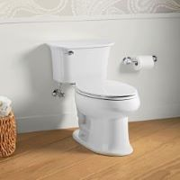
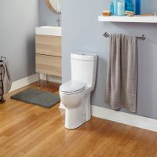
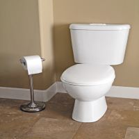

Toilets
Based on appearance, it’s easy to think that all toilets are pretty much the same. But a peek under their lids reveals important differences, and recent innovations, that make shopping for this fixture something of a sleuthing exercise. To learn more about the latest toilet technology, options, and upgrades, read on. It will make the hunt for your next bathroom fixture much easier.
Types of Toilets
Two-Piece Toilet |
 | The elongated bowl on this gravity-fed toilet has no siphon jet; all water exits the tank through the rim for a thorough cleaning. Shown: Stinson, starting at $306 at Sterling Plumbing. |
One-Piece Toilet |
 | Vacuum-assist technology sucks air up the trapway, for the flushing performance of a pressure-assist toilet that’s as quiet as a gravity-fed one. Shown: Stealth, $350 from Niagara Conservation. |
Wash-Down Toilet |
 | This round-front model is virtually impossible to clog, thanks to a trapway that’s a full 4 inches in diameter. Shown: Sydney Smart Back Outlet, $489; Caroma |
Sinks
When it comes to sinks, there’s a wide array of materials that you can choose from. It all comes down to finding something that suits your tastes. Porcelain is the most popular option for bathroom sinks, but metal, cast iron, stone, glass, and even wood can all be molded into a basin of any size or shape.
One thing to consider is how well the material you choose will stand up to cleaning products. Some materials are more susceptible to degradation than others and will need to be cared for differently from porcelain. Copper, for example, requires a special cleaner and wax. Make sure you’re aware of a sink’s care requirements before you decide that it’s the one for you.
There are no restrictions on the size of your sink, but it should be suitable for the dimensions of your bathroom. There’s no point in having a luxuriously large basin if it’s going to dwarf all the other elements. Consider a corner sink if you’re limited on space. At the other end of the spectrum, if you have room, it can be very useful to have two basins in a shared bathroom.
Types of sinks
-
Drop-in Sinks, also known as self-rimming sinks, feature a rim or lip that rests on the countertop. This type of sink is very popular because it’s a cinch to install, fitting right into the pre-cut hole on most vanities.
-
Undermount Sinks sit under the countertop and must be attached from beneath. A hole needs to be custom cut into the counter to fit the sink, making it very difficult to install on your own. But the benefit to having this type is that there are no obstructions—you can wipe liquid and whatever else falls onto the counter directly into the sink.
-
Wall-mount sinks, also known as floating sinks, are installed directly onto the wall. They don’t rest on a counter or vanity, which makes them a great choice for smaller bathrooms (and where wheelchair access is needed). Wall-mount sinks may feature exposed plumbing as an element of design, and a towel bar can be attached underneath. Console sinks are wall-mounted sinks that have added legs for support.